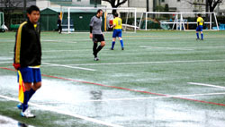
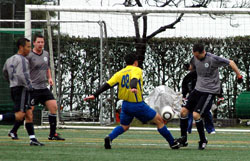

|
YC&AC, Sunday 28th February.
On a cold, wet, Sunday morning YC&AC managed to keep their unbeaten run going as they comfortably beat a tough and well organized Geckoes team.
In conditions that were far from ideal for playing great football, both teams tried their best to get the ball down & play. After a slightly nervy start, YC&AC were rewarded for some slick build up play when Mikey Taw neatly slotted home to put the league champs in front. From this point on the home side really stepped up & gear and nearly doubled their lead when Mikey narrowly missed just a few moments later. They did eventually manage to get a second goal which cam via a rare (as Halley’s Comet) Russ Philp strike into the top corner from 20 yards.
Confidence was sky high and YC&AC made it 3-0 before half time as Anthony Savage scored his fourth in as many games with a sweetly struck volley. The goal & the celebration deserved a better audience.
The second half turned out be a case of after the Lord Mayor’s show and the game became very scrappy. As ever the YC&AC defence were rock solid allowing a spirited Geckoes few chances on Goal. The home team did have few more chances to put the game beyond reach however it wasn’t to be. And no one can deny Savage made the correct decision trying to rip the Geckoes left back for a 15th time rather than crossing it to one of his four unmarked teammates standing in the box..
In the end 3-0 was probably a true reflection of the game, both teams performing admirably in very unpleasant conditions.
Report by Russ Philp
|